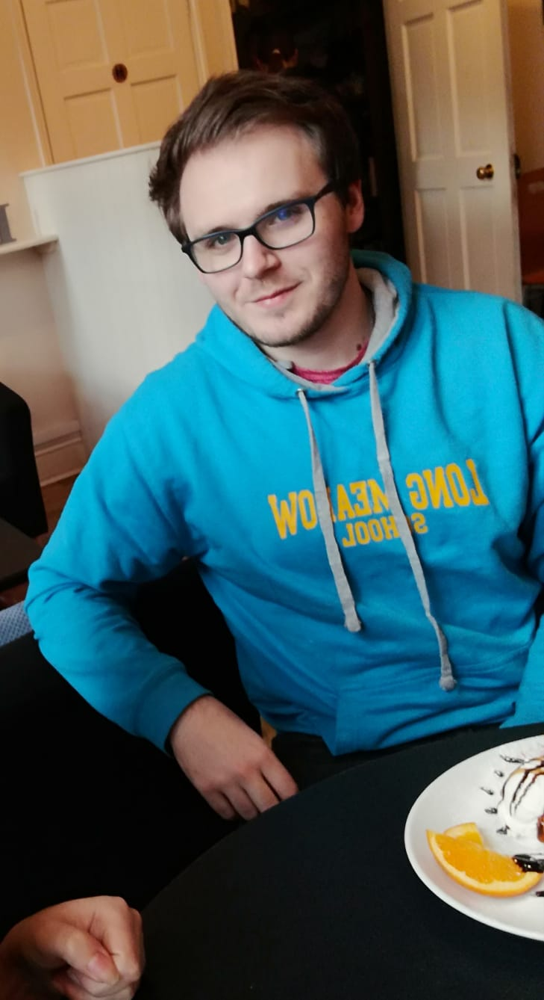

Warning this website is under construction
Welcome!
Thanks for stopping by! Here you will find some of the things I have made and been involved in. I love all things Data Science and also have a deep interest in Cosmology and Theoretical Physics

Iain Moorhouse
"Working with Rishan was incredibly valuable to my Development as a Data Scientist. He helped me to greatly improve my Python coding and improve my understanding of different ML models. He was great at scaling my proof of concepts to productionised models."
Stefan Blaginov
"I've rarely met someone that can grasp new cocepts as quickly as Rishan. This along with his well-developed mathematical intuition, made working with him a pleasure."

Their Name
You can use this as a place to put recommendations, accolades and testimonials